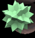
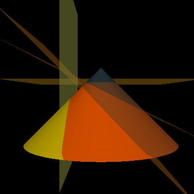

Zahlenteufel
Appolonius Cone
3D manipulable model in Processing
31
Combinatorial Game optimal player using dynamic programming
Lupa
Magnifier Glass Effect in MATLAB
Earley Algorithm
CFG Non-deterministic parsing in Python
Parzen Window
Experimenting with Parzen Window in MATLAB for Density Estimation
KMP Drawer
KMP Automaton Drawer with Graphviz
Transitive Reduction
Transitive Reduction of a Graph in Python
Perceptron Plotter
Learning From Data Homework - Perceptron Learning Algorithm in MATLAB with plotting of the hyperplanes.
Pytomaton
Finite State Automaton simulator in Python with determinization/minimization algorithms.
3D Scene in WebGL with shaders
Utah Teapot made with Bezier Patches, featuring normal display and different types of illumination.
...
